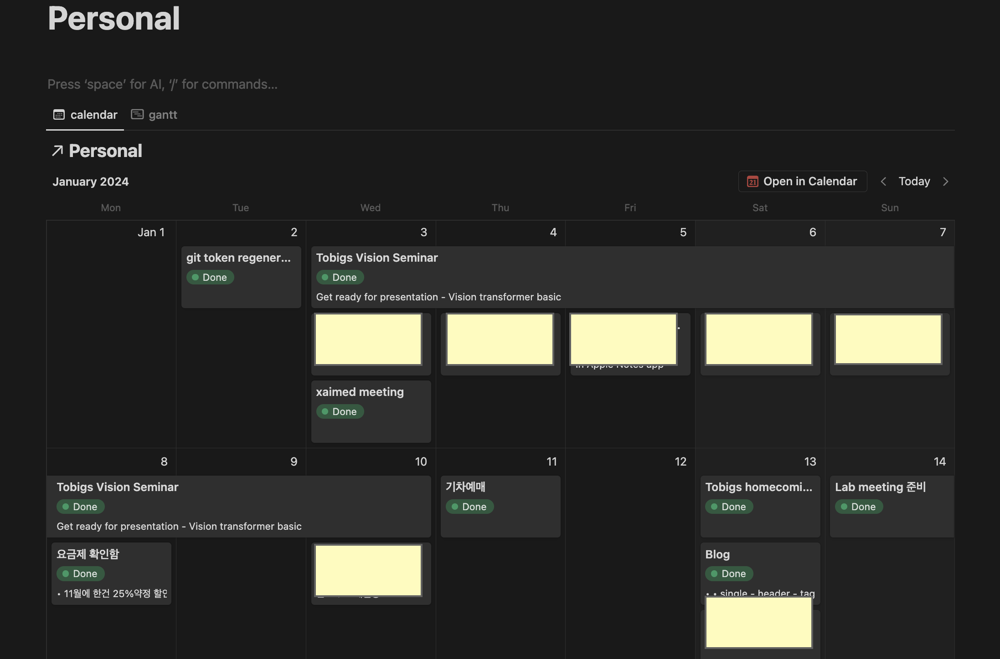
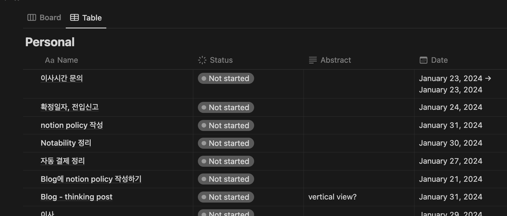
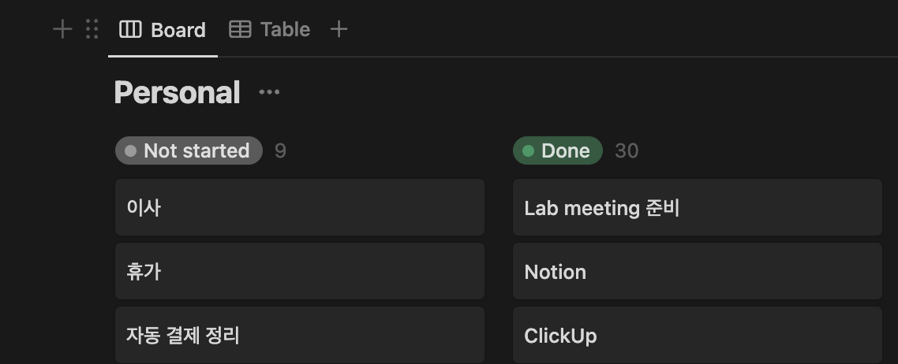
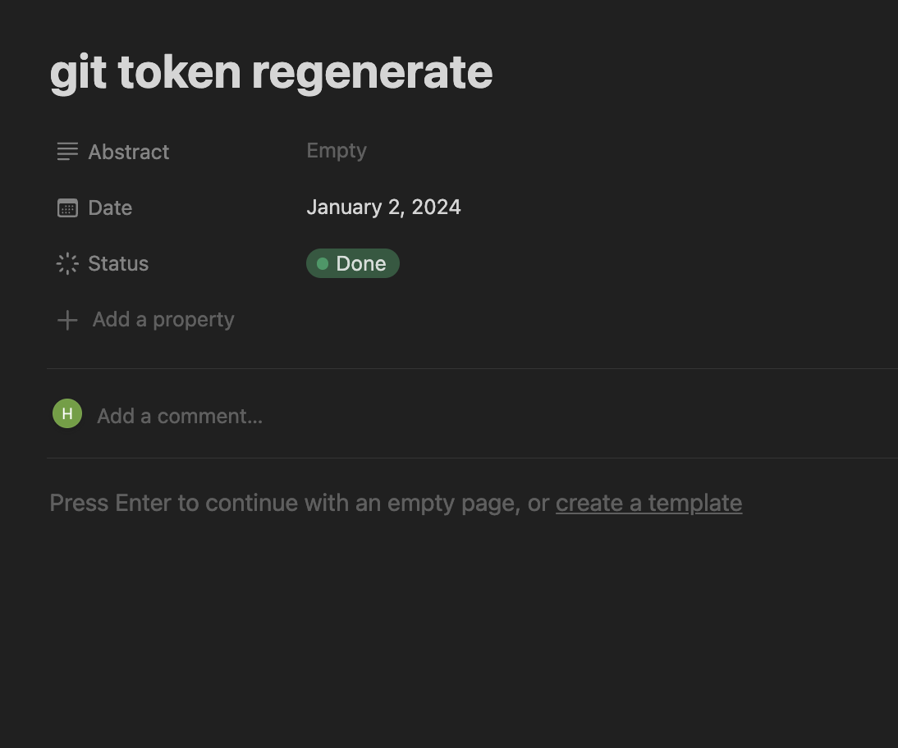

일정 관리를 위해 Ipad note app을 사용했었고, ClickUp으로 갈아타려 했으나 유료이슈가 있어 결국 다시 Notion을 돌아옴.
ClickUp은 완전하게 Project management with co-workers로 디자인 되어 있는데 지금 생각해보면 완전하게 노션과 같은 구조임.
그래서 ClickUp 한 이틀 보면서 database / view를 이해하게 되었고 추가로 Project management를 어떻게 하면 될지에 대한 개념도 얻음.
못써서 아쉽긴 한데 나름 도움이 되었음.
1. 무엇이 필요한가?
무엇이 필요한지 그리고 얼마나 기록할 것이지 둘다 중요함.
우선 필요한 것들은 : To do list, Daily summary, Project / Research management 정도임.
To do list : 뭘 해야 하는가
Daily summary : 무엇을 했는가
Project management : 어떤 flow로 진행 하는가
2. 왜 노션인가?
우선 사용하는 사람들이 많고 동기화가 빠름.
그리고 Notion Calendar가 있음.
3. 어떻게 사용하는가?
To do list를 예로 들어보자.
개인적인 일 - 예를들어 블로그 정리, 가방정리 와 같은 카테고리가 있고, 연구 - 논문 작성, 모델 ablation 등이 있음.
원래는 이것들을 모두 한 파일에 관리하려 했으나, 비효율 적인거 같음.
개인적인 일은 평생 존재 하는 카테고리인데, 연구나 과제는 1년 안쪽이라고 생각함.
따라서 각각의 카테고리를 만드는 것은 무한대로 늘어나니 결국 각각을 하나의 프로젝트로 만드는 것이 좋겠다고 판단함.
0. database, page, view의 개념
우선 알아야 할 것이 databaset, page, view 에 대한 개념임. (완전히 개인적인 견해임)
Notion은 ClickUp 처럼 정해저 있는 Heirarchy가 없음.
기본적으로 page안에 계속 page를 만들수가 있음.
page는 기본적으로 md로 작동하며 이 자체가 하나의 folder로 상용됨.
가장 두드러지는 특징이 database임. (ClickUp 덕분에 이해하게 됨.)
이게 정확히 어떤 형태인지는 접근 할 수 없어서 헷갈리는데 ClickUp을 보면 정확하게 database에 접근이 가능함.
Notion에 에서 /database를 보면 기본적으로 Table이 나옴.
근데 이게 database는 절대로 아님, 그냥 Table은 하나의 view임.
즉, database는 우리가 접근 할 수 없지만 그래도 최대한 user friendly하게 해줘야 하니까 우선은 Table view로 보이게 하는것임.
그래서 /database를 만들고 Table를 누르면 바로 Edit View가 나오는 것을 볼 수 있음.
즉, 내가 원하는 대로 View를 설정해서 보면 됨.
종합해보면, 최상위 page는 project라고 생각하면 쉽고 그 안에 database를 만들어 여러가지 view로 볼 수 있음.
또한 page in page가 되니 해당 project에는 page를 추가하여 여러가지 sub projcet를 만들거나 해당 project의 설명을 적을 수 있음.
아래는 실제로 내가 어떻게 사용하는지에 관한 예시임.
(예시를 보면 위에 글이 이해됨.)
각 예시는 하나의 project를 의미하며 대부분 최상위 page라고 생각하면 쉬움.
1. Personal
개인적인 일을 적는 project임.
예를들어 블로그 수정, 동아리 등등의 일정과 무엇을 했는지 간단하게 적을 수 있음.
해당 project는 하나의 database를 갖고 있음.
그리고 이를 쉽게 보여주기 위해 calendar view를 적용하여 가장 위에 위치시킴.

수정을 쉽게 하기위해 그 아래 Board, Table를 위치 시켰음.


세개의 view 모두 같은 source의 database이므로 하나만 수정해도 전체가 수정 됨.
예를들어 calendar view에서 특정 task를 드래그 하면 날짜를 Table view에서 바꾸는 것 보다 더 쉽게 바꿀 수 있음.
그리고 Table view를 보면 간단하게 상세 설명을 적을 수 있는 Abstract(text) 도 만들어 두었음.
만약 더 많은 정보를 적어야 한다면 Name에서 해당 블럭을 클릭하면 page로 열림.
그럼 md형식으로 정리 할 수 있음.
근데 최대한 그렇게 하는것은 안하려고 하는게 모든 task에 page가 있다면 결국에는 한눈에 볼 수가 없음.
그리고 데이터도 이상해 지는데 database안에 다시 nested page가 생기는게 됨.
그래서 현재는 최대한 Table view에 칼럼만 추가하려고 함.
칼럼을 추가하는 것은 page의 내용으로 들어가는 것이 아니라 property로 들어가기 때문에 관리하기가 쉬움.
예를들어 위의 calendar view에서 Abstract 기준으로 특정 단어가 들어간것만 보여주라는 filter를 사용할 수 있음.

여기서 property만 적으면 page로 인식이 안되는거 같음.
이렇게 해서 개인적인 일에 대한 관리를 할 수 있음.
뒤에 나오는 Project/Research와는 다르게 하나하나의 task가 크게 적을것이 없어 Abstract만으로도 충분할 것으로 예상됨.
해당 project는 사소하게 할일이나 한일을 기록하는 용도로 사용하고 있음.
평균적으로 하루게 3개정도를 작성함.
약간 걱정되는게 그럼 1년에 1000개인데 이게 되는지 정확하게 모르겠음.
20년도 이후에 personal use에서는 제한이 사라졌다고 나오긴 함.
만약 안되면 어쩔수 없이 원래대로 하나의 페이지 안에서 서술 하는 방식으로 가야할 듯.
위에것만 보면 apple calendar만 사용해도 충분할 거 같은데 결정적으로 table과 board view가 주는 장점이 확실함.
Apple calendar로 대체 가능 하다고 생각하긴함.
2024.01.22.Monday
우려했던 일이 일어남.
연구와 프로젝트를 분리했음에도 너무 많은것이 있음.
따라서 actual personal로 바꿈.
즉, meeting, seminar, blog를 또다른 프로젝트로 만듬.
2. Projects / Researches
ClickUp에서 많은 인사이트들을 얻음.
이부분은 최상위 page안에 각각의 project들이 있음.
project라는 단어는 앞에서 썼으니 research라고 하겠음.
research관리는 personal 관리와 확실히 구분되는 점이 있음.
research는
- 종료가 있음.
- 매일의 기록보다는 flow를 보여주는것이 좋음.
- sub project가 존재함. 예를들어 ablation, related work 등
그래서 기본적으로 Personal form을 가져가되 sub project들은 아래처럼 새로운 하나의 database를 만들고 이를 page로 생성하여 gallery view로 보여줌.
즉, personal에서는 하나의 database안에 item들이 많으니 page가 있는것을 지양했는데, 여기서는 database안에 item은 많지 않고 오히려 하나의 item안에 들어가는 내용이 많음.
따라서 gallery view가 효율적임.
여기서 flow를 더 잘 보여주기 위해 ClickUp의 whiteborad같은 페이지를 추가할 예정임.
2024.01.23.Tuesday
하나의 page에 대해 multiple dates 설정이 안됨.
근데 여기서는 하나의 카테고리에 대해 저번주 월요일, 이번수 수요일 이렇게 multiple이 필요함.
따라서 날짜 표시는 personal과 같이 제목만 넣고 이를 relation을 통해 category에 있는것과 연결
3. Pros and cons
ClickUp과 비교하면 서로 다른 database를 하나의 view에 보는것이 불가능 하다는 단점이 있음.
다만, Notion Calendar는 여러개의 database를 한번에 볼 수 있긴함.
즉, 사실상 calendar view만 가능하다는 의미임.
4. Notion을 사용하지 못한다면?
GoodNote 처럼 갑자기 이상한 시스템으로 바뀌는 경우를 생각할 수 있음.
이미 노션을 사용하면 어떻게 일정들을 관리하면 되는지 배웠기에 같은 Heirarchy를 사용하면 csv 파일로도 충분히 효율적으로 관리 할 수 있다고 생각됨.
만약 진짜 노션을 못쓰는 경우가 온다면 그냥 돈내고 GCP에 호스팅 하면 됨. Flask로 하면 될듯.
사실 가장 문제는 기존의 데이터를 어떻게 저장되나 인데, export에서 모든것은 html 형태로 저장하면 잘 되는것을 확인함.
5.Apple Calendar
알림 울려야 하는 모든 것들
추가로 block의 개수와 내용의 길이는 trade-off관계인듯.
Personal의 경우 block이 많고, project의 경우 한 block의 내용이 많음.